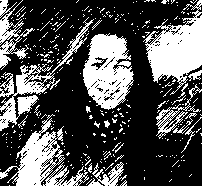
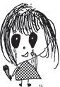
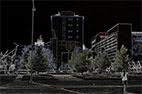

Helena Kurm <helena.kurm@gmail.com>
	
21:55 (10 tundi tagasi)
		
saajale mina
<!DOCTYPE html>
<html>
<head>

<meta charset="UTF-8">
<title>Elulugu</title>
</head>
<body style="background-color: grey;">


</html>
    <h1 style="text-align: center;">ELULUGU</h1>
   
    <p style="text-align:center;">
      <a href="Logo.gif">Helena</a>
   
    <p style="text-align: center;";>
        <strong>Olen sündinud ja kasvanud Kilingi-Nõmmes.</strong><br>
        <em>Peale kooli lõpetamist asusin elama Pärnusse.</em>       
       
    </p>
</body>

</dl>
<hr>

<h2>Haridustee </h2>

<ul>
    <li>  <a href="http://www.kilingi.edu.ee/">Kilingi-Nõmme Keskkool</a>
    <li>  <a href="http://www.tihemetsa.ee/tihemetsa-tehnikum/">Tihemetsa Tehnikum</a>
    <li>  <a href="http://www.saksatk.ee/et/">Pärnu Saksa Tehnoloogiakool</a>
</ul>
<h3>Töökohad</h3>
<P>
<ol>
    <li>Pärnu Postimees  <a href="http://www.parnupostimees.ee/">PP</a>
   
</ol>
<p>

</dl>
<hr>
<article>
<p style="color:black; text-align: right;100 px;">Vaata ka minu esimest  <a href="poem.html">kodulehekülge</a>!</p>
<hr>
<p style="text-align:center;">
<p>MINU TÖÖD</article> <p style="text-align:center;">
<figure>
 <figcaption>Töötlus "Lapse joonistus"</figcaption>

            </figure>
               
   
    <figure>
             <figcaption>Töötlus "Martensi väljak.Pärnu"</figcaption>
            </figure>
           
            <figure>